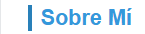
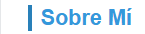
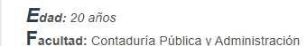
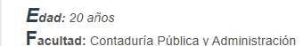

Práctica 1
Selector Universal (*)
Este selector aplica estilos a todos los elementos de la página.


Selector de Etiqueta (Elemento)
Se aplica a todas las etiquetas de un tipo específico (ej. `body`, `p`, `h1`).

Selector de Clase (.clase)
Se usa para seleccionar elementos con una clase específica.

Selector de ID (#id)
Aplica estilos a un solo elemento con un ID único.


Selector de Descendencia (padre hijo)
Selecciona elementos dentro de otro elemento específico.
 

Pseudoelementos y Pseudoclases
Ejemplos como `p::first-letter` o `a:hover`.
 
